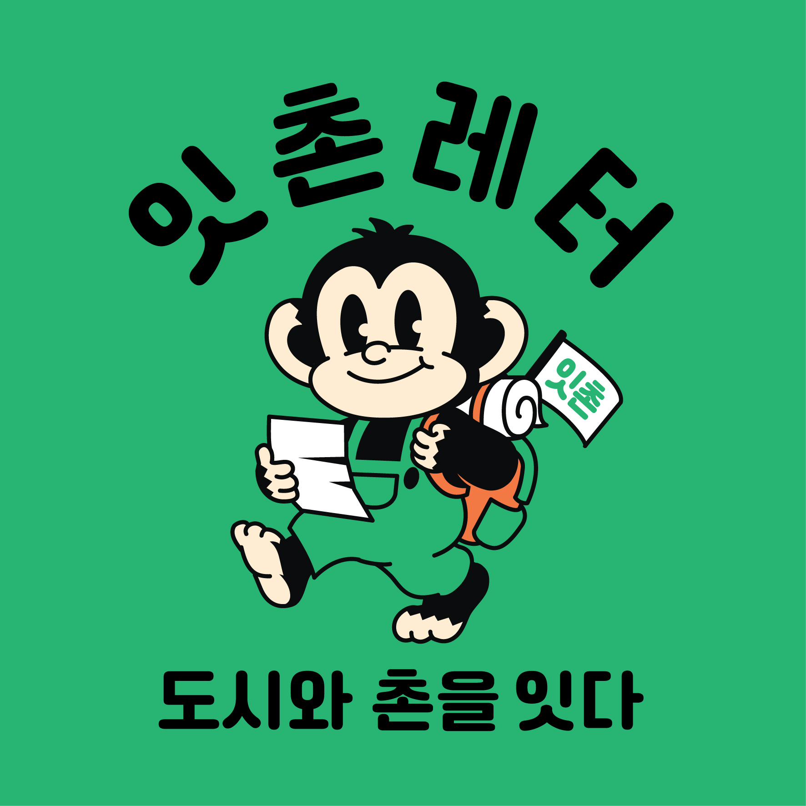

Loading...
도시와 촌을 잇다,
당신의 시선과 결단의 시작점에 함께하는 잇'촌입니다.

About Us
청년들이 지방에서 사라지고 있다.
농촌의 고립과 세대의 편중, 청년들이 촌에 대해 느끼는 편견과 심리적거리감은 그들이 지방에 무관심하게 만든다. 이는 지방의 종말이다.
지방의 청년인구감소
다양한 원인으로 인하여 수도권으로 유출되는 지방청년들소멸위험이 높아진 지자체들
높아진 인구 유출로 지방의 소멸위험성, 적은 홍보로 알려지지 않은 청년정책고립된 지방주민들
지방 거주 노인들 우울증 및 고독사 증가, 지방을 경시하는 인식 증가잇촌은 청년들이 느끼는 '심리적거리감'에 집중했습니다.
지방에 대한 편견을 깨버리고, 물리적인 거리보다 심리적으로 멀게 느끼는 거리감을 해소하고자합니다.
이러한 지방청년소멸 문제를 위하여
잇'촌의 지방정보전달레터서비스 잇촌레터를 소개합니다.

"시선과 결단의 시작점", 잇촌레터
잇촌레터는 촌으로 사람들의 시선을 모으고, 이주나 방문을 결단할수있도록 조력자가 되겠습니다.
지역 자연경관 소개
로컬음식 소개
지역 내 액티비티
커뮤니티
Our Team
IT'S-CHON Team Members
JEONG - MINJI
Project Manager, Market Manager
LEE - JISOO
Project Manager, Accounting Manager
KIM - SOYOUNG
Project Manager , Contact Manager